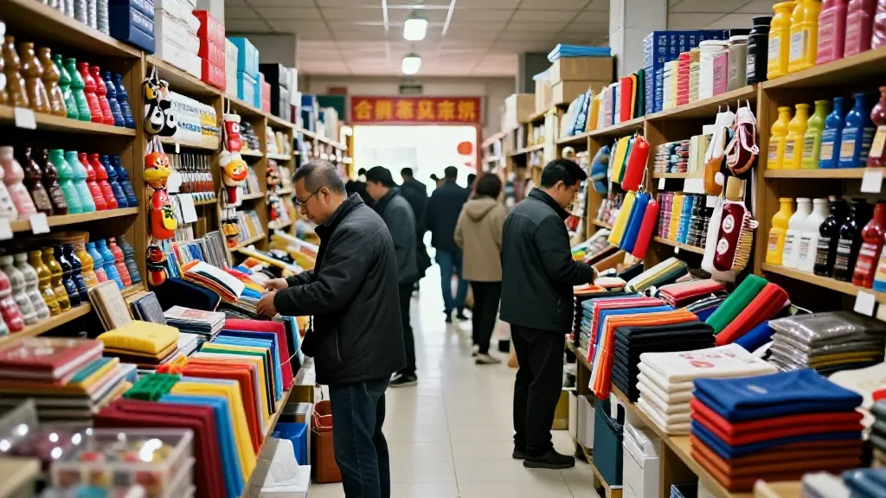
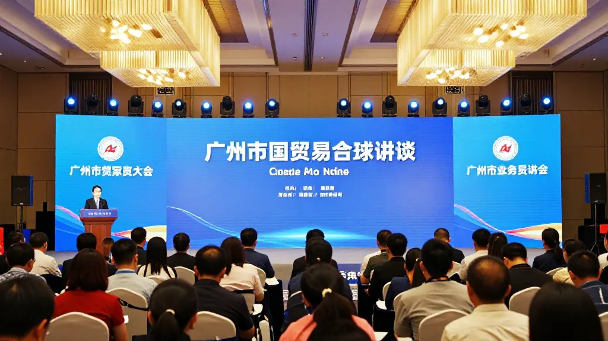
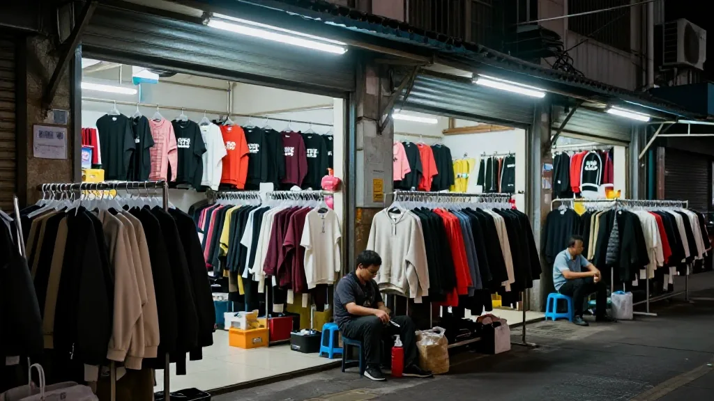
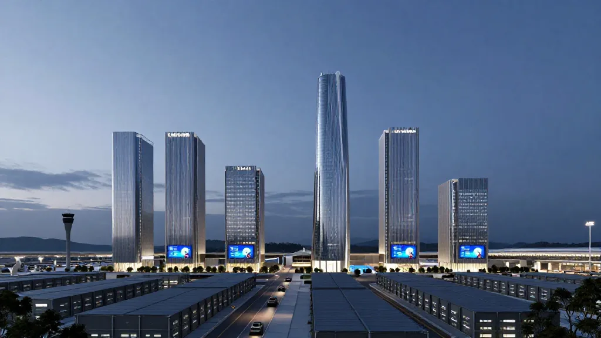

【郑哥点评】
广州国际商业港不只是花都的一块地。它是广州对“义乌模式”的一次正面回应。千年商都能不能补上服务链这一课，决定的不只是一个项目的成败，而是华南外贸货源组织方式会不会被重写。
广州终于坐不住了
2026年8月25日，广州国际商业港首开区北地块正式挂牌，规划总面积9.86平方公里，相当于1400个标准足球场。
消息一出，广州外贸圈炸开了锅。有人兴奋，有人怀疑，更多人带着一种复杂的心情在观望——毕竟，这座城市已经太久没有在商贸领域搞出这么大动静了。
但真正让这件事变得意味深长的，不是9.86平方公里这个数字，而是一个问题：为什么是现在？

圖片由 AI輔助創作（Z-Image-Turbo）
一个省城向一个县城“取经”
2025年，义乌所在的浙江金华市，外贸进出口首次突破万亿大关，达到1.05万亿元，成为全国第8座“万亿外贸之城”。仅义乌一个县级市，进出口规模就达到8300多亿元，同比增长25.1%，规模超过全国25个省份。
同期，广州外贸规模仍居全国前列，但增速与金华、义乌的差距，让“千年商都”感受到了实实在在的压力。
更耐人寻味的是广州的态度。今年6月底，广州市委书记冯忠华带队赴浙江调研，两天时间辗转杭州、金华、嘉兴三座城市，专程走进义乌全球数贸中心、云驿小镇。7月初，广州市政府礼堂又举办了一场“小商品到大品牌”穗义商贸双城对话会，508家专业市场的经营者代表与义乌来的企业家们面对面交流。
一个GDP超3万亿的一线城市，两次组团向一个县级市“取经”。这本身就说明了很多问题。

圖片由 AI輔助創作（Z-Image-Turbo）
广州的“大而不强”，到底弱在哪？
广州拥有508家专业市场，经营面积超1500万平方米，汇聚商户约16万家，年商贸交易额突破1.5万亿元。流花服装、站西鞋包、狮岭皮具、中大纺织——每一个名字背后都是千亿级的产业集群。
但规模大，不等于能力强。
今年广州市两会上，九三学社广州市委员会的一份提案直戳痛点：广州多数专业市场停留在低附加值代工和批发环节，未能凸显国际性枢纽和供应链中心优势，产业协同创新与国际化运营能力薄弱，未形成规模效应与全链条生态。
中山大学港澳珠江三角洲研究中心副主任林江说得更直白：广州很多批发市场长期依赖档口经济、物业出租，市场管理者更像房东，商户更像个体的经营者，组织化、平台化的程度不足，缺少统一的品牌、交易规则、数字系统、信用体系以及统一的供应链服务。
这就是问题的本质。义乌的核心竞争力从来不是“低价货源”，而是它构建了一套完整的贸易服务体系——小单交易、拼箱便利、外贸代理成熟、市场采购贸易方式便捷。中小商户从接单到报关、从物流到结算，每个环节都有专业服务商接住，试错成本极低。
广州恰恰缺的不是货，缺的是把货变成生意的那一整套“服务链”。广州强在制造，弱在服务链——物流、通关、跨境培训、数字化运营各板块各自独立，中小制造企业想出海，试错成本高、运营效率偏低。

圖片由 AI輔助創作（Z-Image-Turbo）
商业港要解的是什么题？
理解了这层背景，再来看广州国际商业港的规划，思路就清晰了。
项目选址花都区、白云国际机场西北片区，可实现一站接驳白云机场，两站直达广州北站，30分钟通达珠江新城、金融城等核心商务区，100分钟辐射大湾区主要城市。这种区位条件，让“空港+商贸”的组合有了落地的物理基础。
但更关键的是业态设计。广州国际商业港要统筹布局会展贸易、数字商贸、总部经济、跨境贸易、文商旅融合等多元业态，目标是建成“专业化、智能化、一站式、枢纽型的大型实体商贸平台”。广州市主要领导在调研中明确要求，要联动打造“永不落幕的广交会”。
这意味着，广州国际商业港不是要再造一个“大市场”，而是要造一个“平台”——把广州分散在各区的专业市场资源，通过一个高能级的载体整合起来，植入义乌式的贸易服务生态。
广州已经在做一些尝试。流花服装市场自建了跨境电商平台LIUHUAMALL.com，提供产品展示、渠道搭建、报关、物流、结汇等全链条服务，目前平台入驻商户1000多家，2025年流量突破1亿人次。今年8月，全省首个鞋服跨境贸易数字平台在广州白云石井申泽商贸城启动。南沙也落地了两大外贸服务平台，推动传统专业市场向阳光化、数字化、平台化转型。
这些动作说明，广州并非没有意识到问题，也并非没有在行动。但“点状突破”和“系统重构”之间，还有很长的路要走。

圖片由 AI輔助創作（Z-Image-Turbo）
商业港能复制义乌吗？
坦率地说，不能。
义乌的成功是几十年积累的结果，它的核心竞争力不是某一条政策或某一个平台，而是一整套被反复打磨过的贸易服务生态——从市场采购贸易方式到拼箱物流体系，从外贸代理到信用担保，每一个环节都经过无数中小商户的实际检验和迭代优化。这种生态的形成，靠的是时间和密度，不是靠规划图纸。
广州要走的，必然是一条不同的路。义乌服务的主要是中小商户和中小采购商，而广州需要同时服务大型企业、中小外贸商户和新兴市场采购商。广州的产业腹地——珠三角雄厚的制造业基础——也远比义乌所在的浙中地区更加多元和复杂。
这意味着，广州国际商业港的难度不是“会不会建”，而是“建成之后能不能真正跑起来”。一个平台能不能活，取决于它能不能让入驻的商户赚到钱。广州需要的不是在花都画出一块9.86平方公里的地，而是在这块地上真正建立起一套让中小商户“敢出海、能出海、出海能赚钱”的服务体系。
从目前公开的信息来看，首开区北地块是商业商务用地，宗地面积26.72公顷，计容建筑面积为570351平方米。土地要素保障已经到位，但制度层面的创新——比如市场采购贸易方式的落地、跨境结算的便利化、多语种服务的配套——才是决定这个项目成败的关键。
不只是广州的事
如果把视野再拉远一点，广州国际商业港的意义可能超出广州本身。
2026年，广州“十五五”规划纲要提出，展望2035年，地区生产总值比2023年翻一番，实现“再造新广州”的目标。在一个外贸增速被内陆城市和县级市快速追赶的时代，广州需要找到新的增长引擎。
更深层的意义在于，广州的转型尝试，实际上代表了中国传统商贸城市在数字化和全球化双重冲击下的一条突围路径。当电商和直播带货不断挤压传统批发的生存空间，当东南亚和中东的新兴市场采购商对供应链服务提出更高要求，“档口经济”的旧模式已经走到了尽头。
广州能不能走通这条路，对其他城市有重要的参照价值。但前提是，这座城市能否真正放下“千年商都”的历史包袱，像三十年前的义乌那样，从零开始构建一套真正服务于中小商户的贸易服务体系。